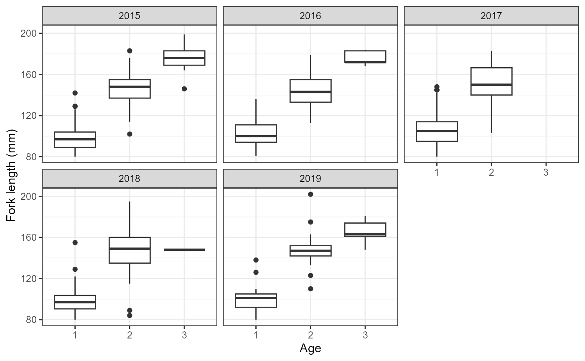
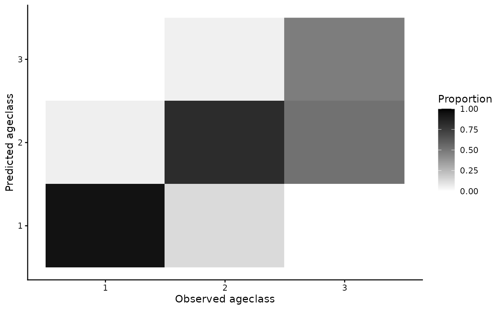
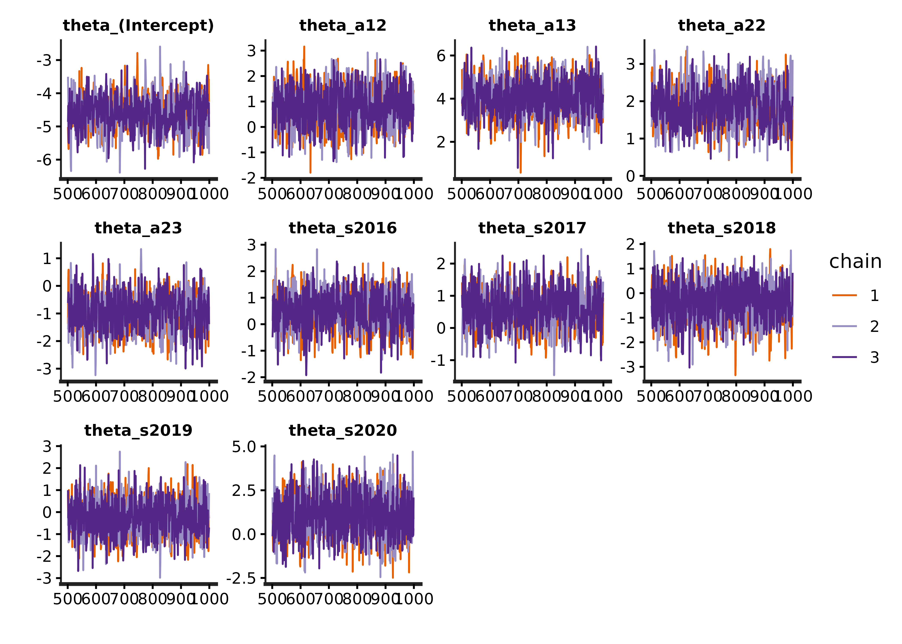
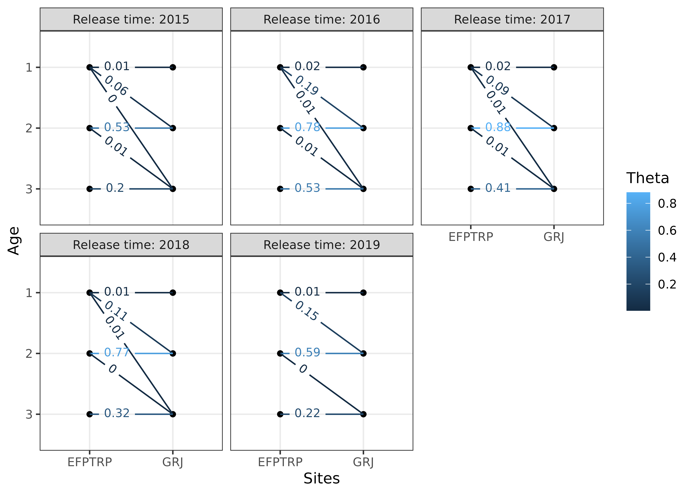
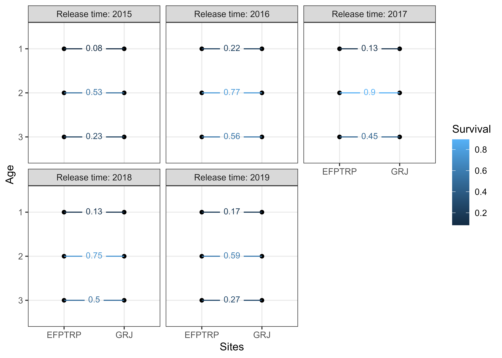
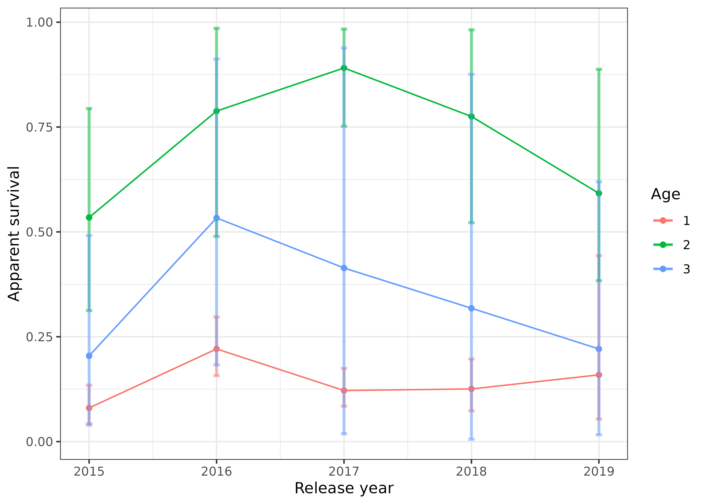
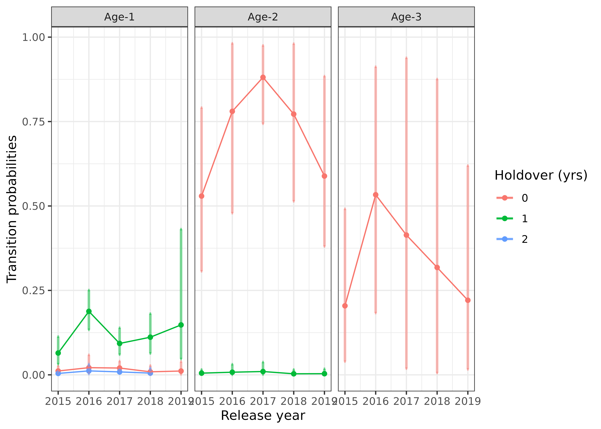

library(space4time)
library(dplyr)
#>
#> Attaching package: 'dplyr'
#> The following objects are masked from 'package:stats':
#>
#> filter, lag
#> The following objects are masked from 'package:base':
#>
#> intersect, setdiff, setequal, union
library(ggplot2)This is an example workflow for implementing the model. This implementation uses data queried from Columbia Basin Research Data Access in Real Time (DART). The Columbia Basin Research has a query that was developed for use with the Basin TribPit software. However, the data can also be used by space4time.
Data processing
We start with the observations of individuals from the East Fork Potlatch River Rotary Screw Trap, which has the site name: EFPTRP (previously POTREF). We’ll use observations from 2015 to 2019 for this example. These data are from Idaho Department of Fish and Game’s juvenile trapping database.
Here are some of the rows of a file that contain data on juvenile
steelhead encountered at this rotary screw trap. Some of the columns
(id, obs_time, and ageclass) are
required to have those names. Any additional variables can be included.
However, complete data for all variables (except ageclass)
is required for any of the following analyses.
| id | obs_time | SurveyDate | FL | Bin | Season | ageclass |
|---|---|---|---|---|---|---|
| 3DD.007753945C | 2015 | 5/3/2015 | 80 | 80 | Spring | NA |
| 3DD.007753732D | 2015 | 5/4/2015 | 80 | 80 | Spring | 1 |
| 3DD.0077535753 | 2015 | 5/5/2015 | 80 | 80 | Spring | NA |
| 3DD.0077532003 | 2015 | 5/8/2015 | 80 | 80 | Spring | NA |
| 3DD.0077537A2A | 2015 | 5/9/2015 | 80 | 80 | Spring | NA |
| 3DD.007752C3C2 | 2015 | 5/11/2015 | 80 | 80 | Spring | NA |
We identify and drop duplicate observations as well as drop
individuals with missing auxilary data (FL).
# identify individuals with more than one observation at the RST in the data
EFPTRP_age_data %>%
dplyr::group_by(id) %>% # groups data by ID
dplyr::arrange(id,SurveyDate) %>% # sorts by ID and date
dplyr::mutate(Obs = dplyr::n()) %>% # creates a column that is the number of times
# each individual is in the data
filter(Obs > 1) # filter for multiple observations
#> # A tibble: 0 × 8
#> # Groups: id [0]
#> # ℹ 8 variables: id <chr>, obs_time <int>, SurveyDate <chr>, FL <int>,
#> # Bin <int>, Season <chr>, ageclass <int>, Obs <int>
# identify missing data
EFPTRP_age_data %>%
dplyr::filter(is.na(FL)) # filter for FL as NA
#> [1] id obs_time SurveyDate FL Bin Season ageclass
#> <0 rows> (or 0-length row.names)
# drop duplicate observations (keep the first observation) and missing data
EFPTRP_age_data <- EFPTRP_age_data %>%
dplyr::group_by(id) %>%
dplyr::arrange(id,SurveyDate) %>%
dplyr::summarize( # summarizes by id, so it returns 1 row per id
id = dplyr::first(id), # retains the first value
SurveyDate = dplyr::first(SurveyDate),
obs_time = dplyr::first(obs_time),
FL = dplyr::first(FL),
Bin = dplyr::first(Bin),
Season = dplyr::first(Season),
ageclass = dplyr::first(ageclass)
# obs_site = first(obs_site), # save the first observation of any additional variables
) %>%
dplyr::filter(!is.na(FL)) Instead of using fork lengths, for this example we will use binned fork lengths. This allows for greater efficency in model fitting because it allows for observations to be marginalized (grouped together). The bins are also z-scored (centered and divided by the standard deviation) to help with model fitting if Bin is treated as a continuous variable. The min and max bin are truncated so that there are not any bins with only a handful of observations.
# create histogram to visualize the distribution of fork lengths
# hist(EFPTRP_age_data$FL,breaks = 50)
EFPTRP_age_data <- EFPTRP_age_data %>%
dplyr::mutate(Bin = dplyr::case_when(FL < 80 ~ 80, # if FL < 80, return 80
FL >180 ~ 180, # if FL greater than 180, return 180
# otherwise, round FL to the nearest 10 mm.
FL >= 80 & FL <= 180 ~ round(FL,-1)),
Bin_sc = (Bin - mean(Bin)) / stats::sd(Bin)) # z-scale BinTo obtain capture history data, we used query tools developed by DART
for Basin TribPit using functions available in the
space4time package. We used tools developed for Basin
TribPit and PitPro to query PTAGIS and identify transported fish. More
information regarding Basin TribPit and the associated queries can be
found at “https://www.cbr.washington.edu/analysis/apps/BasinTribPit”.
To conduct queries, we used the query “Upload TagID List created by the
user” (“https://www.cbr.washington.edu/dart/query/pit_tagids”).
We uploaded the tag list of observations from the age data and conducted
the query to create a “TribPit Observation File”
(“pitbasin_branching_upload_1759171262_907.csv”). To identify
transported fish, we use their “site_config.txt” file, which located on
the page for PitPro (“https://www.cbr.washington.edu/analysis/apps/pitpro”)
and is regularly updated (“https://www.cbr.washington.edu/paramest/docs/pitpro/updates/sites_config.txt”).
An alternative to using the queries in DART is to use a Complete Tag History query in PTAGIS. However, care must be taken to identify indiviudals that were transported by barges.
The function to process DART TribPit observation files is
read_DART_file(). The first argument is the filepath to the
“TribPit Observation File”, the second is the age data, that need to the
specific columns identified above, and third (optional) is the path to
the “site_config.txt” file. The default is to use the link.
proc_DART_data <- read_DART_file(filepath = "pitbasin_branching_upload_1759171262_907.csv",
aux_age_df = EFPTRP_age_data,
DART_config = "sites_config.txt")
#> Obtained the PTAGIS site configuration formatted by DART from:
#> sites_config.txt
#> Warning in identify_barged_fish(capture_data, parsed_df): Number of
#> observations without info. Assuming not transported. N = 1Note see ?read_DART_file if there were more than one
DART file to include.
The output from read_DART_file
(proc_DART_data) is a list with two objects, a data.frame
of capture occasions (proc_DART_data$ch_df) and a data
frame of the age auxiliary data
(proc_DART_data$aux_age_df)
ch_df <- proc_DART_data$ch_df
head(ch_df)
#> id site time removed
#> 1 384.3B23958521 BCC 2015 FALSE
#> 2 384.3B23958521 POTREF 2015 FALSE
#> 3 384.3B23958521 TWX 2015 FALSE
#> 4 384.3B2397A68E GOJ 2015 FALSE
#> 5 384.3B2397A68E GRJ 2015 FALSE
#> 6 384.3B2397A68E POTREF 2015 FALSE
aux_age_df <- proc_DART_data$aux_age_df
head(aux_age_df)
#> # A tibble: 6 × 8
#> id SurveyDate obs_time FL Bin Season ageclass Bin_sc
#> <chr> <chr> <int> <int> <dbl> <chr> <int> <dbl>
#> 1 384.3B23958521 3/15/2015 2015 205 180 Spring NA 2.47
#> 2 384.3B2397A68E 3/19/2015 2015 160 160 Spring NA 1.74
#> 3 384.3B239C9845 3/20/2015 2015 177 180 Spring NA 2.47
#> 4 384.3B239D8C19 3/19/2015 2015 160 160 Spring NA 1.74
#> 5 384.3B239EB35C 3/19/2015 2015 137 140 Spring 2 1.01
#> 6 384.3B239ED4C7 3/19/2015 2015 138 140 Spring NA 1.01Summarize some of the observations
table(aux_age_df$ageclass)
#>
#> 1 2 3
#> 388 192 21
table(ch_df$site)
#>
#> B2J BBA BCC BO1 BO2 BO3 BO4 DRM EFPTRP EPR GOA
#> 3 1 38 2 2 3 5 1 685 1 5
#> GOJ GRA GRJ GRS HLM ICH JDJ JO1 JO2 KHS LAP
#> 126 5 191 8 259 21 39 2 1 5 1
#> LMA LMJ MC1 MCJ PCM POTREF TD1 TD2 TWX
#> 5 84 5 19 2 2451 4 2 14In this case, some of the observations are likely of kelts, which are
post-spawning adult steelhead attempting to return to the ocean. To
exclude these, we can use the remove_kelt_obs()
function.
The kelt_obssite argument is the site after which all
observations should be dropped, meaning that if an individual is
observed at this site, then all further observations of the individual
in the same or next time periods should be dropped. The Lower Granite
Dam fish ladder site (“GRA”) is used to identify adults.
ch_df2 <- remove_kelt_obs(ch_df = ch_df,kelt_obssite = "GRA")
#> Dropping observations after observations at the following sites: GRANext, we can drop observations at non-target sites.
# only keep observations in the following sites
ch_df3 <- ch_df2 %>%
dplyr::filter(site %in% c("EFPTRP","POTREF","GOJ","GRJ","LMJ","MCJ","TWX","JDJ","BCC","B2J")) Note that here, the name of the RST in the EF Potlatch River was POTREF at some points in time.
Next, we can check what age range to include for each site:
# returns a data frame of the ages of known age fish at different observations
ch_df %>%
dplyr::left_join(aux_age_df,by = "id") %>% # merge age data with capture history
dplyr::filter(!is.na(ageclass)) %>% # only check observations of known age fish
dplyr::mutate(Age_at_obs = ageclass + (time - obs_time)) %>% # calculate known age
dplyr::group_by(site,Age_at_obs) %>% # group by site and age at site
dplyr::summarise(N = dplyr::n()) # summarize number of observations
#> # A tibble: 32 × 3
#> # Groups: site [19]
#> site Age_at_obs N
#> <chr> <dbl> <int>
#> 1 BCC 2 2
#> 2 BO2 3 1
#> 3 BO4 3 1
#> 4 EFPTRP 1 76
#> 5 EFPTRP 2 59
#> 6 EFPTRP 3 7
#> 7 GOA 3 1
#> 8 GOJ 1 3
#> 9 GOJ 2 25
#> 10 GOJ 3 3
#> # ℹ 22 more rowsThe range of ages at each site is 1 through 3. All sites with substantial observations have the same range.
This ends the initial data cleaning. Now, we can create site
configuration object. Because there are multiple names for the initial
release site, these are treated as if there are multiple release sites
so we use the simplebranch_s4t_config function. The sites
are reprinted below.
table(ch_df3$site)
#>
#> B2J BCC EFPTRP GOJ GRJ JDJ LMJ MCJ POTREF TWX
#> 3 38 685 126 191 39 84 19 2451 14Creating the capture history object
See documentation for more details
(?simplebranch_s4t_config). The East Fork Potlatch RST has
been at multiple locations, although here we treat them as the same site
because they are not at substantially different locations. The
sites_to_pool argument is used to merge these sites together. The
holdover sites are the sites after which individuals can holdover before
transitioning to the next site. The branch_sites argument
specifies the initial branching sites, which are the two names for the
East Fork Potlatch RST.
Here, we assume that no fish holdover after passing Lower Granite Dam (“GRJ”). We pool all recapture sites below Little Goose Dam (“GOJ”) with Little Goose. We have to specify min age and max age for each site even if they are pooled.
ef_pot_site_config <- simplebranch_s4t_config(sites_names = c("EFPTRP",
"POTREF",
"GRJ","GOJ","LMJ","MCJ","JDJ",
"BCC",
"TWX"),
branch_sites = c("EFPTRP",
"POTREF"),
holdover_sites = c("EFPTRP",
"POTREF"),
sites_to_pool = list("EFPTRP" = c("EFPTRP","POTREF"),
"GOJ" = c("LMJ","MCJ","JDJ",
"BCC","TWX")),
min_a = c("EFPTRP" = 1,
"POTREF" = 1,
"GRJ" = 1,
"GOJ" = 1,
"LMJ" = 1,
"MCJ" = 1,
"JDJ" = 1,
"BCC" = 1,
"TWX" = 1),
max_a = c("EFPTRP" = 3,
"POTREF" = 3,
"GRJ" = 3,
"GOJ" = 3,
"LMJ" = 3,
"MCJ" = 3,
"JDJ" = 3,
"BCC" = 3,
"TWX" = 3)
)
print(ef_pot_site_config)
#> Site and age transition configuration object
#>
#> There are N = 3 with N = 1 sites with holdovers
#>
#> Sites: EFPTRP, GRJ, GOJ
#>
#> Sites with holdovers: EFPTRP
#>
#> Sites pooled:
#> EFPTRP include: POTREF
#> GOJ include: LMJ, MCJ, JDJ, BCC, TWX
#>
#> Site -> site:
#> EFPTRP -> GRJ
#> GRJ -> GOJ
#> GOJ ->
#>
#> Age range per site:
#> EFPTRP: 1-3
#> GRJ: 1-3
#> GOJ: 1-3Next, we create initial capture history object:
efp_s4_ch <- s4t_ch(ch_df = ch_df3,aux_age_df = aux_age_df,s4t_config = ef_pot_site_config)
#> Removing sites from capture history: B2J
#> Note, there are IDs in aux_age_df that are not in ch_df, n = 1
#>
#> Error log:
#>
#> Repeat encounters at same site N = 0
#> Individuals observed after being removed ('zombies') N = 3
#> Gap in observation times that exceed max difference in ages N = 3
#> Holdovers observed between sites with only direct transitions N = 0
#> Reverse movements N = 1
#> Known age individuals with ages outside of site-specific age-range N = 0
#> Individuals with missing initial release site N = 0
#>
#> Potential errors:
#> Site/time combinations with 0 observations N = 0
#> Site/time combinations with less than 10 observations N = 2
#> Maximum release occasions in l_matrix and m_matrix do not match.We need to address the errors in the error log. We can use the
clean_s4t_ch_obs() function, which returns a cleaned
capture history data frame as well as information on what observations
were dropped.
clean_ch_df <- clean_s4t_ch_obs(efp_s4_ch)
#> N = 4 observations and N = 0 individuals were dropped.We can inspect what observations were dropped and determine whether these makes biological sense.
# show dropped observations
clean_ch_df$dropped_ch_df
# show full observation history of individuals with dropped observations
clean_ch_df$intermediate_ch_df %>%
dplyr::group_by(id) %>% # group by ID
dplyr::filter(any(drop_obs == TRUE)) %>% # keep only individuals with dropped observations
head() # print out only the first 6 observations
# can inspect individuals
# aux_age_df %>%
# dplyr::filter(id == "3DD.00778C962F")
# clean_ch_df$intermediate_ch_df %>%
# dplyr::filter(id == "3DD.00778C962F")Next, we re-make the capture history object using the cleaned
ch_df data frame.
efp_s4_ch2 <- s4t_ch(ch_df = clean_ch_df$cleaned_ch_df,aux_age_df = aux_age_df,s4t_config = ef_pot_site_config)
#> Note, there are IDs in aux_age_df that are not in ch_df, n = 1
#>
#> Error log:
#>
#> Repeat encounters at same site N = 0
#> Individuals observed after being removed ('zombies') N = 0
#> Gap in observation times that exceed max difference in ages N = 0
#> Holdovers observed between sites with only direct transitions N = 0
#> Reverse movements N = 0
#> Known age individuals with ages outside of site-specific age-range N = 0
#> Individuals with missing initial release site N = 0
#>
#> Potential errors:
#> Site/time combinations with 0 observations N = 0
#> Site/time combinations with less than 10 observations N = 1There are no errors, so we can use this capture history object in our
analyses. If there were more errors (which does occasionally happen), we
could clean the efp_s4_ch2 object and see if the errors can
be corrected by the cleaning function. As observations are removed more
issues can arise, so cleaning, remaking the capture history object,
cleaning the remade object, and remaking it again can happen.
Next, we can fit the model for age class. First, we will compute some summaries of the ageing data.
# annual summaries
aux_age_df %>%
dplyr::filter(!is.na(ageclass)) %>% # only include observations with ages
dplyr::group_by(obs_time,ageclass) %>% # group by age and obs_time (year)
dplyr::summarize(mean_FL = mean(FL), # mean FL
sd_FL = stats::sd(FL), # sd of FL
N = dplyr::n()) # number of observations
#> `summarise()` has grouped output by 'obs_time'. You can override using the
#> `.groups` argument.
#> # A tibble: 14 × 5
#> # Groups: obs_time [5]
#> obs_time ageclass mean_FL sd_FL N
#> <int> <int> <dbl> <dbl> <int>
#> 1 2015 1 98.0 12.4 91
#> 2 2015 2 146. 16.4 53
#> 3 2015 3 176. 15.9 9
#> 4 2016 1 103. 12.2 57
#> 5 2016 2 144. 16.2 41
#> 6 2016 3 176. 7.22 5
#> 7 2017 1 106. 15.2 164
#> 8 2017 2 150. 19.2 39
#> 9 2018 1 99.2 12.4 51
#> 10 2018 2 146. 23.2 31
#> 11 2018 3 148 NA 1
#> 12 2019 1 99.8 12.6 25
#> 13 2019 2 148. 16.0 28
#> 14 2019 3 166. 12.0 6
# create boxplot of fork length by ages
aux_age_df %>%
dplyr::filter(!is.na(ageclass)) %>% # only include observations with ages
ggplot2::ggplot(ggplot2::aes(factor(ageclass), FL)) +
geom_boxplot() +
facet_wrap(~obs_time) +
theme_bw() +
labs(x = "Age",y = "Fork length (mm)")
Fit models
Based on the above figure, we have the following models for ageclass, which use ordinal regression. We could use FL or scaled FL, but we will instead use the binned fork length and the scaled binned fork length. This is so that the model can be more efficient as a result of marginalization. Use one-sided formulas.
age_mod1 <- fit_ageclass(age_formula = ~ I(factor(obs_time)) + Bin_sc,
s4t_ch = efp_s4_ch2)
age_mod2 <- fit_ageclass(age_formula = ~ I(factor(obs_time)) * Bin_sc,
s4t_ch = efp_s4_ch2)
age_mod3 <- fit_ageclass(age_formula = ~ I(factor(obs_time)) + I(factor(Bin)),
s4t_ch = efp_s4_ch2)We can inspect some simple goodness of fit:
plot(age_mod1)
If further goodness-of-fit metrics are desired, there is a
predict function for the ageclass models that can be used
to return predicted values (see
?predict.s4t_ageclass_model).
We can use AIC to select the best fitting model:
AIC(age_mod1,age_mod2,age_mod3)
#> df AIC
#> age_mod1 7 177.8796
#> age_mod2 11 181.8134
#> age_mod3 16 190.2178The first model is selected based on AIC.
Next, we fit space-for-time mark recapture models. The ageclass model
is the top model from above (note: use one-sided formulas only). The
formulas for detection probability (p) and conditional
transition probability (theta) are determined based on the
site structure. There is only one site, so the full model for theta is
theta ~ a1 * a2 * s * j, which allows for different
transitions based on time at “release” (s), “release” site
(j), age at “release” (a1), and age at
“recapture” (a2). The quotes around “release” and
“recapture” indicate that the captures can be passive and that in this
case does not imply actual capture (i.e. if they passed a site but
weren’t detected). We recommend fitting the full model for theta to
obtain transition estimates for every combination of age, time, and
site. Many reduced formulas would not make sense.
The full model for p is p ~ t * a1 * a2, which allows
for different detection probability for each time of “recapture”
(t), age at “release” (a1), and age at
“recapture” (a2). Site is technically included, but because
detection probabilities are not estimated for the first or final site,
only the second site (“GRJ”) has detection probabilities estimated. The
detection probabilities for the final site are not separable from
transition rates (note: this means that transition rates estimated
between “GRJ” and “GOJ” are not actually the transition rates).
The full model for p may be over-parameterized, so we also fit reduced formulas where detection probability only depends on time and where detection probability depends on time and age at “recapture”.
# Allows for parallel computation (reduces overall time)
# rstan::rstan_options(auto_write = TRUE)
# options(mc.cores = parallel::detectCores())
s4t_m1 <- fit_s4t_cjs_rstan(p_formula = ~ t,
theta_formula = ~ a1 * a2 * s * j,
ageclass_formula = ~ I(factor(obs_time)) + Bin_sc,
fixed_age = FALSE,
s4t_ch = efp_s4_ch2)
#>
#> SAMPLING FOR MODEL 's4t_cjs_draft7' NOW (CHAIN 1).
#> Chain 1:
#> Chain 1: Gradient evaluation took 0.000973 seconds
#> Chain 1: 1000 transitions using 10 leapfrog steps per transition would take 9.73 seconds.
#> Chain 1: Adjust your expectations accordingly!
#> Chain 1:
#> Chain 1:
#> Chain 1: Iteration: 1 / 1000 [ 0%] (Warmup)
#> Chain 1: Iteration: 100 / 1000 [ 10%] (Warmup)
#> Chain 1: Iteration: 200 / 1000 [ 20%] (Warmup)
#> Chain 1: Iteration: 300 / 1000 [ 30%] (Warmup)
#> Chain 1: Iteration: 400 / 1000 [ 40%] (Warmup)
#> Chain 1: Iteration: 500 / 1000 [ 50%] (Warmup)
#> Chain 1: Iteration: 501 / 1000 [ 50%] (Sampling)
#> Chain 1: Iteration: 600 / 1000 [ 60%] (Sampling)
#> Chain 1: Iteration: 700 / 1000 [ 70%] (Sampling)
#> Chain 1: Iteration: 800 / 1000 [ 80%] (Sampling)
#> Chain 1: Iteration: 900 / 1000 [ 90%] (Sampling)
#> Chain 1: Iteration: 1000 / 1000 [100%] (Sampling)
#> Chain 1:
#> Chain 1: Elapsed Time: 59.044 seconds (Warm-up)
#> Chain 1: 46.3 seconds (Sampling)
#> Chain 1: 105.344 seconds (Total)
#> Chain 1:
#>
#> SAMPLING FOR MODEL 's4t_cjs_draft7' NOW (CHAIN 2).
#> Chain 2:
#> Chain 2: Gradient evaluation took 0.000805 seconds
#> Chain 2: 1000 transitions using 10 leapfrog steps per transition would take 8.05 seconds.
#> Chain 2: Adjust your expectations accordingly!
#> Chain 2:
#> Chain 2:
#> Chain 2: Iteration: 1 / 1000 [ 0%] (Warmup)
#> Chain 2: Iteration: 100 / 1000 [ 10%] (Warmup)
#> Chain 2: Iteration: 200 / 1000 [ 20%] (Warmup)
#> Chain 2: Iteration: 300 / 1000 [ 30%] (Warmup)
#> Chain 2: Iteration: 400 / 1000 [ 40%] (Warmup)
#> Chain 2: Iteration: 500 / 1000 [ 50%] (Warmup)
#> Chain 2: Iteration: 501 / 1000 [ 50%] (Sampling)
#> Chain 2: Iteration: 600 / 1000 [ 60%] (Sampling)
#> Chain 2: Iteration: 700 / 1000 [ 70%] (Sampling)
#> Chain 2: Iteration: 800 / 1000 [ 80%] (Sampling)
#> Chain 2: Iteration: 900 / 1000 [ 90%] (Sampling)
#> Chain 2: Iteration: 1000 / 1000 [100%] (Sampling)
#> Chain 2:
#> Chain 2: Elapsed Time: 61.259 seconds (Warm-up)
#> Chain 2: 45.521 seconds (Sampling)
#> Chain 2: 106.78 seconds (Total)
#> Chain 2:
#>
#> SAMPLING FOR MODEL 's4t_cjs_draft7' NOW (CHAIN 3).
#> Chain 3:
#> Chain 3: Gradient evaluation took 0.000734 seconds
#> Chain 3: 1000 transitions using 10 leapfrog steps per transition would take 7.34 seconds.
#> Chain 3: Adjust your expectations accordingly!
#> Chain 3:
#> Chain 3:
#> Chain 3: Iteration: 1 / 1000 [ 0%] (Warmup)
#> Chain 3: Iteration: 100 / 1000 [ 10%] (Warmup)
#> Chain 3: Iteration: 200 / 1000 [ 20%] (Warmup)
#> Chain 3: Iteration: 300 / 1000 [ 30%] (Warmup)
#> Chain 3: Iteration: 400 / 1000 [ 40%] (Warmup)
#> Chain 3: Iteration: 500 / 1000 [ 50%] (Warmup)
#> Chain 3: Iteration: 501 / 1000 [ 50%] (Sampling)
#> Chain 3: Iteration: 600 / 1000 [ 60%] (Sampling)
#> Chain 3: Iteration: 700 / 1000 [ 70%] (Sampling)
#> Chain 3: Iteration: 800 / 1000 [ 80%] (Sampling)
#> Chain 3: Iteration: 900 / 1000 [ 90%] (Sampling)
#> Chain 3: Iteration: 1000 / 1000 [100%] (Sampling)
#> Chain 3:
#> Chain 3: Elapsed Time: 57.894 seconds (Warm-up)
#> Chain 3: 46.899 seconds (Sampling)
#> Chain 3: 104.793 seconds (Total)
#> Chain 3:
s4t_m2 <- fit_s4t_cjs_rstan(p_formula = ~ t * a2,
theta_formula = ~ a1 * a2 * s * j,
ageclass_formula = ~ I(factor(obs_time)) + Bin_sc,
fixed_age = FALSE,
s4t_ch = efp_s4_ch2)
#>
#> SAMPLING FOR MODEL 's4t_cjs_draft7' NOW (CHAIN 1).
#> Chain 1:
#> Chain 1: Gradient evaluation took 0.000898 seconds
#> Chain 1: 1000 transitions using 10 leapfrog steps per transition would take 8.98 seconds.
#> Chain 1: Adjust your expectations accordingly!
#> Chain 1:
#> Chain 1:
#> Chain 1: Iteration: 1 / 1000 [ 0%] (Warmup)
#> Chain 1: Iteration: 100 / 1000 [ 10%] (Warmup)
#> Chain 1: Iteration: 200 / 1000 [ 20%] (Warmup)
#> Chain 1: Iteration: 300 / 1000 [ 30%] (Warmup)
#> Chain 1: Iteration: 400 / 1000 [ 40%] (Warmup)
#> Chain 1: Iteration: 500 / 1000 [ 50%] (Warmup)
#> Chain 1: Iteration: 501 / 1000 [ 50%] (Sampling)
#> Chain 1: Iteration: 600 / 1000 [ 60%] (Sampling)
#> Chain 1: Iteration: 700 / 1000 [ 70%] (Sampling)
#> Chain 1: Iteration: 800 / 1000 [ 80%] (Sampling)
#> Chain 1: Iteration: 900 / 1000 [ 90%] (Sampling)
#> Chain 1: Iteration: 1000 / 1000 [100%] (Sampling)
#> Chain 1:
#> Chain 1: Elapsed Time: 69.616 seconds (Warm-up)
#> Chain 1: 51.495 seconds (Sampling)
#> Chain 1: 121.111 seconds (Total)
#> Chain 1:
#>
#> SAMPLING FOR MODEL 's4t_cjs_draft7' NOW (CHAIN 2).
#> Chain 2:
#> Chain 2: Gradient evaluation took 0.000727 seconds
#> Chain 2: 1000 transitions using 10 leapfrog steps per transition would take 7.27 seconds.
#> Chain 2: Adjust your expectations accordingly!
#> Chain 2:
#> Chain 2:
#> Chain 2: Iteration: 1 / 1000 [ 0%] (Warmup)
#> Chain 2: Iteration: 100 / 1000 [ 10%] (Warmup)
#> Chain 2: Iteration: 200 / 1000 [ 20%] (Warmup)
#> Chain 2: Iteration: 300 / 1000 [ 30%] (Warmup)
#> Chain 2: Iteration: 400 / 1000 [ 40%] (Warmup)
#> Chain 2: Iteration: 500 / 1000 [ 50%] (Warmup)
#> Chain 2: Iteration: 501 / 1000 [ 50%] (Sampling)
#> Chain 2: Iteration: 600 / 1000 [ 60%] (Sampling)
#> Chain 2: Iteration: 700 / 1000 [ 70%] (Sampling)
#> Chain 2: Iteration: 800 / 1000 [ 80%] (Sampling)
#> Chain 2: Iteration: 900 / 1000 [ 90%] (Sampling)
#> Chain 2: Iteration: 1000 / 1000 [100%] (Sampling)
#> Chain 2:
#> Chain 2: Elapsed Time: 62.647 seconds (Warm-up)
#> Chain 2: 43.467 seconds (Sampling)
#> Chain 2: 106.114 seconds (Total)
#> Chain 2:
#>
#> SAMPLING FOR MODEL 's4t_cjs_draft7' NOW (CHAIN 3).
#> Chain 3:
#> Chain 3: Gradient evaluation took 0.000782 seconds
#> Chain 3: 1000 transitions using 10 leapfrog steps per transition would take 7.82 seconds.
#> Chain 3: Adjust your expectations accordingly!
#> Chain 3:
#> Chain 3:
#> Chain 3: Iteration: 1 / 1000 [ 0%] (Warmup)
#> Chain 3: Iteration: 100 / 1000 [ 10%] (Warmup)
#> Chain 3: Iteration: 200 / 1000 [ 20%] (Warmup)
#> Chain 3: Iteration: 300 / 1000 [ 30%] (Warmup)
#> Chain 3: Iteration: 400 / 1000 [ 40%] (Warmup)
#> Chain 3: Iteration: 500 / 1000 [ 50%] (Warmup)
#> Chain 3: Iteration: 501 / 1000 [ 50%] (Sampling)
#> Chain 3: Iteration: 600 / 1000 [ 60%] (Sampling)
#> Chain 3: Iteration: 700 / 1000 [ 70%] (Sampling)
#> Chain 3: Iteration: 800 / 1000 [ 80%] (Sampling)
#> Chain 3: Iteration: 900 / 1000 [ 90%] (Sampling)
#> Chain 3: Iteration: 1000 / 1000 [100%] (Sampling)
#> Chain 3:
#> Chain 3: Elapsed Time: 67.313 seconds (Warm-up)
#> Chain 3: 44.428 seconds (Sampling)
#> Chain 3: 111.741 seconds (Total)
#> Chain 3:
# full model
s4t_m3 <- fit_s4t_cjs_rstan(p_formula = ~ t * a1 * a2,
theta_formula = ~ a1 * a2 * s * j,
ageclass_formula = ~ I(factor(obs_time)) + Bin_sc,
fixed_age = FALSE,
s4t_ch = efp_s4_ch2)
#>
#> SAMPLING FOR MODEL 's4t_cjs_draft7' NOW (CHAIN 1).
#> Chain 1:
#> Chain 1: Gradient evaluation took 0.000836 seconds
#> Chain 1: 1000 transitions using 10 leapfrog steps per transition would take 8.36 seconds.
#> Chain 1: Adjust your expectations accordingly!
#> Chain 1:
#> Chain 1:
#> Chain 1: Iteration: 1 / 1000 [ 0%] (Warmup)
#> Chain 1: Iteration: 100 / 1000 [ 10%] (Warmup)
#> Chain 1: Iteration: 200 / 1000 [ 20%] (Warmup)
#> Chain 1: Iteration: 300 / 1000 [ 30%] (Warmup)
#> Chain 1: Iteration: 400 / 1000 [ 40%] (Warmup)
#> Chain 1: Iteration: 500 / 1000 [ 50%] (Warmup)
#> Chain 1: Iteration: 501 / 1000 [ 50%] (Sampling)
#> Chain 1: Iteration: 600 / 1000 [ 60%] (Sampling)
#> Chain 1: Iteration: 700 / 1000 [ 70%] (Sampling)
#> Chain 1: Iteration: 800 / 1000 [ 80%] (Sampling)
#> Chain 1: Iteration: 900 / 1000 [ 90%] (Sampling)
#> Chain 1: Iteration: 1000 / 1000 [100%] (Sampling)
#> Chain 1:
#> Chain 1: Elapsed Time: 65.475 seconds (Warm-up)
#> Chain 1: 46.47 seconds (Sampling)
#> Chain 1: 111.945 seconds (Total)
#> Chain 1:
#>
#> SAMPLING FOR MODEL 's4t_cjs_draft7' NOW (CHAIN 2).
#> Chain 2:
#> Chain 2: Gradient evaluation took 0.000712 seconds
#> Chain 2: 1000 transitions using 10 leapfrog steps per transition would take 7.12 seconds.
#> Chain 2: Adjust your expectations accordingly!
#> Chain 2:
#> Chain 2:
#> Chain 2: Iteration: 1 / 1000 [ 0%] (Warmup)
#> Chain 2: Iteration: 100 / 1000 [ 10%] (Warmup)
#> Chain 2: Iteration: 200 / 1000 [ 20%] (Warmup)
#> Chain 2: Iteration: 300 / 1000 [ 30%] (Warmup)
#> Chain 2: Iteration: 400 / 1000 [ 40%] (Warmup)
#> Chain 2: Iteration: 500 / 1000 [ 50%] (Warmup)
#> Chain 2: Iteration: 501 / 1000 [ 50%] (Sampling)
#> Chain 2: Iteration: 600 / 1000 [ 60%] (Sampling)
#> Chain 2: Iteration: 700 / 1000 [ 70%] (Sampling)
#> Chain 2: Iteration: 800 / 1000 [ 80%] (Sampling)
#> Chain 2: Iteration: 900 / 1000 [ 90%] (Sampling)
#> Chain 2: Iteration: 1000 / 1000 [100%] (Sampling)
#> Chain 2:
#> Chain 2: Elapsed Time: 66.892 seconds (Warm-up)
#> Chain 2: 48.802 seconds (Sampling)
#> Chain 2: 115.694 seconds (Total)
#> Chain 2:
#>
#> SAMPLING FOR MODEL 's4t_cjs_draft7' NOW (CHAIN 3).
#> Chain 3:
#> Chain 3: Gradient evaluation took 0.0007 seconds
#> Chain 3: 1000 transitions using 10 leapfrog steps per transition would take 7 seconds.
#> Chain 3: Adjust your expectations accordingly!
#> Chain 3:
#> Chain 3:
#> Chain 3: Iteration: 1 / 1000 [ 0%] (Warmup)
#> Chain 3: Iteration: 100 / 1000 [ 10%] (Warmup)
#> Chain 3: Iteration: 200 / 1000 [ 20%] (Warmup)
#> Chain 3: Iteration: 300 / 1000 [ 30%] (Warmup)
#> Chain 3: Iteration: 400 / 1000 [ 40%] (Warmup)
#> Chain 3: Iteration: 500 / 1000 [ 50%] (Warmup)
#> Chain 3: Iteration: 501 / 1000 [ 50%] (Sampling)
#> Chain 3: Iteration: 600 / 1000 [ 60%] (Sampling)
#> Chain 3: Iteration: 700 / 1000 [ 70%] (Sampling)
#> Chain 3: Iteration: 800 / 1000 [ 80%] (Sampling)
#> Chain 3: Iteration: 900 / 1000 [ 90%] (Sampling)
#> Chain 3: Iteration: 1000 / 1000 [100%] (Sampling)
#> Chain 3:
#> Chain 3: Elapsed Time: 68.041 seconds (Warm-up)
#> Chain 3: 48.801 seconds (Sampling)
#> Chain 3: 116.842 seconds (Total)
#> Chain 3:
# optionally save model objects
# save(s4t_m1,s4t_m2,s4t_m3, file = "EF_Potlatch_s4t.RData")Check and evaluate fitted models
We can check model fits:
s4t_m1
#> Inference for Stan model: s4t_cjs_draft7.
#> 3 chains, each with iter=1000; warmup=500; thin=1;
#> post-warmup draws per chain=500, total post-warmup draws=1500.
#>
#> mean se_mean sd 2.5% 25% 50% 75%
#> theta_(Intercept) -4.58 0.02 0.50 -5.60 -4.91 -4.56 -4.26
#> theta_a12 0.79 0.02 0.77 -0.76 0.29 0.83 1.33
#> theta_a13 4.04 0.02 0.84 2.39 3.46 4.07 4.60
#> theta_a22 1.87 0.02 0.52 0.86 1.52 1.87 2.19
#> theta_a23 -0.98 0.02 0.65 -2.26 -1.42 -0.98 -0.55
#> theta_s2016 0.52 0.02 0.70 -0.92 0.05 0.55 1.02
#> theta_s2017 0.61 0.02 0.58 -0.53 0.23 0.61 0.98
#> theta_s2018 -0.42 0.02 0.79 -2.01 -0.95 -0.39 0.15
#> theta_s2019 -0.23 0.02 0.80 -1.75 -0.77 -0.23 0.30
#> theta_s2020 1.04 0.03 1.20 -1.27 0.22 1.00 1.79
#> theta_jGRJ 0.45 0.03 0.84 -1.13 -0.16 0.46 0.99
#> theta_a12:a22 2.05 0.02 0.75 0.61 1.55 2.04 2.56
#> theta_a12:s2016 0.05 0.03 1.10 -2.05 -0.70 0.03 0.79
#> theta_a13:s2016 0.57 0.03 1.00 -1.32 -0.12 0.52 1.23
#> theta_a12:s2017 1.26 0.03 1.06 -0.85 0.52 1.28 2.00
#> theta_a13:s2017 0.12 0.02 1.43 -2.87 -0.81 0.11 1.09
#> theta_a12:s2018 0.06 0.03 1.18 -2.16 -0.76 0.06 0.84
#> theta_a13:s2018 0.34 0.03 1.37 -2.36 -0.63 0.37 1.32
#> theta_a12:s2019 -0.54 0.02 0.87 -2.33 -1.07 -0.52 0.01
#> theta_a13:s2019 0.27 0.02 1.21 -2.02 -0.59 0.29 1.12
#> theta_a12:s2020 0.87 0.03 1.26 -1.46 -0.01 0.84 1.72
#> theta_a22:s2016 0.74 0.03 0.74 -0.60 0.22 0.72 1.24
#> theta_a23:s2016 0.61 0.03 0.92 -1.16 -0.01 0.60 1.24
#> theta_a22:s2017 -0.17 0.02 0.62 -1.36 -0.58 -0.19 0.24
#> theta_a23:s2017 0.25 0.03 0.77 -1.26 -0.28 0.26 0.79
#> theta_a22:s2018 1.03 0.02 0.84 -0.54 0.48 0.98 1.57
#> theta_a23:s2018 0.33 0.03 1.07 -1.81 -0.42 0.37 1.07
#> theta_a22:s2019 1.04 0.02 0.89 -0.67 0.42 1.03 1.64
#> theta_a23:s2019 -0.08 0.02 1.12 -2.49 -0.80 -0.06 0.64
#> theta_a12:jGRJ -2.00 0.03 0.94 -3.86 -2.62 -2.00 -1.39
#> theta_a13:jGRJ 0.44 0.03 1.20 -1.90 -0.37 0.44 1.25
#> theta_s2016:jGRJ -0.86 0.03 1.12 -3.10 -1.59 -0.83 -0.13
#> theta_s2017:jGRJ 1.15 0.03 0.95 -0.76 0.50 1.16 1.80
#> theta_s2018:jGRJ -0.24 0.03 1.06 -2.33 -0.97 -0.25 0.47
#> theta_s2019:jGRJ 0.87 0.03 1.08 -1.28 0.22 0.92 1.61
#> theta_a12:a22:s2016 0.10 0.03 1.12 -2.03 -0.66 0.08 0.84
#> theta_a12:a22:s2017 0.34 0.03 1.03 -1.62 -0.39 0.34 1.04
#> theta_a12:a22:s2018 0.66 0.03 1.07 -1.43 -0.07 0.62 1.36
#> theta_a12:s2016:jGRJ -0.67 0.03 1.16 -3.01 -1.50 -0.64 0.15
#> theta_a13:s2016:jGRJ 0.17 0.03 1.29 -2.29 -0.70 0.14 1.02
#> theta_a12:s2017:jGRJ -1.74 0.03 1.03 -3.74 -2.43 -1.75 -1.08
#> theta_a13:s2017:jGRJ -0.05 0.03 1.43 -2.80 -1.02 -0.02 0.88
#> theta_a12:s2018:jGRJ 0.01 0.03 1.15 -2.27 -0.76 0.07 0.80
#> theta_a13:s2018:jGRJ -0.15 0.03 1.33 -2.78 -1.05 -0.20 0.74
#> theta_a12:s2019:jGRJ 0.06 0.03 1.15 -2.12 -0.70 0.04 0.82
#> theta_a13:s2019:jGRJ 0.98 0.03 1.23 -1.29 0.13 0.94 1.82
#> p_(Intercept) -1.87 0.02 0.36 -2.55 -2.12 -1.87 -1.63
#> p_t2016 0.03 0.02 0.43 -0.82 -0.24 0.03 0.32
#> p_t2017 0.90 0.02 0.39 0.12 0.64 0.91 1.17
#> p_t2018 0.86 0.02 0.43 0.02 0.57 0.87 1.14
#> p_t2019 1.17 0.02 0.46 0.29 0.87 1.18 1.47
#> p_t2020 -4.00 0.07 2.39 -9.41 -5.36 -3.61 -2.29
#> overall_surv[1] 0.08 0.00 0.02 0.04 0.06 0.08 0.09
#> overall_surv[2] 0.53 0.00 0.13 0.31 0.45 0.52 0.61
#> overall_surv[3] 0.20 0.00 0.12 0.04 0.12 0.18 0.27
#> overall_surv[4] 0.22 0.00 0.04 0.16 0.20 0.22 0.24
#> overall_surv[5] 0.79 0.00 0.14 0.49 0.69 0.81 0.90
#> overall_surv[6] 0.53 0.00 0.20 0.18 0.38 0.53 0.67
#> overall_surv[7] 0.12 0.00 0.02 0.08 0.11 0.12 0.13
#> overall_surv[8] 0.89 0.00 0.06 0.75 0.85 0.90 0.94
#> overall_surv[9] 0.41 0.01 0.28 0.02 0.16 0.38 0.64
#> overall_surv[10] 0.13 0.00 0.03 0.07 0.10 0.12 0.14
#> overall_surv[11] 0.78 0.00 0.13 0.52 0.68 0.78 0.89
#> overall_surv[12] 0.32 0.01 0.27 0.01 0.07 0.24 0.53
#> overall_surv[13] 0.16 0.00 0.10 0.05 0.10 0.13 0.19
#> overall_surv[14] 0.59 0.00 0.13 0.38 0.50 0.58 0.67
#> overall_surv[15] 0.22 0.00 0.16 0.02 0.10 0.19 0.31
#> overall_surv[16] 0.02 0.00 0.02 0.00 0.01 0.02 0.03
#> overall_surv[17] 0.20 0.00 0.06 0.11 0.16 0.19 0.23
#> overall_surv[18] 0.37 0.00 0.17 0.09 0.22 0.35 0.48
#> overall_surv[19] 0.02 0.00 0.04 0.00 0.00 0.01 0.03
#> overall_surv[20] 0.18 0.00 0.05 0.11 0.15 0.17 0.21
#> overall_surv[21] 0.56 0.01 0.23 0.16 0.38 0.56 0.73
#> overall_surv[22] 0.10 0.00 0.06 0.02 0.06 0.09 0.13
#> overall_surv[23] 0.50 0.00 0.06 0.40 0.46 0.50 0.54
#> overall_surv[24] 0.68 0.01 0.31 0.03 0.45 0.80 0.96
#> overall_surv[25] 0.02 0.00 0.03 0.00 0.00 0.01 0.02
#> overall_surv[26] 0.43 0.00 0.10 0.27 0.35 0.41 0.49
#> overall_surv[27] 0.37 0.01 0.26 0.02 0.14 0.32 0.56
#> overall_surv[28] 0.06 0.00 0.08 0.00 0.01 0.03 0.08
#> overall_surv[29] 0.45 0.00 0.11 0.26 0.37 0.45 0.53
#> overall_surv[30] 0.71 0.00 0.19 0.30 0.58 0.74 0.87
#> overall_surv[31] 0.58 0.01 0.24 0.14 0.38 0.57 0.79
#> overall_surv[32] 0.57 0.01 0.26 0.10 0.36 0.58 0.80
#> cohort_surv[1] 0.01 0.00 0.01 0.00 0.01 0.01 0.01
#> cohort_surv[2] 0.06 0.00 0.02 0.03 0.05 0.06 0.08
#> cohort_surv[3] 0.00 0.00 0.00 0.00 0.00 0.00 0.01
#> cohort_surv[4] 0.53 0.00 0.13 0.31 0.44 0.52 0.61
#> cohort_surv[5] 0.01 0.00 0.00 0.00 0.00 0.00 0.01
#> cohort_surv[6] 0.20 0.00 0.12 0.04 0.12 0.18 0.27
#> cohort_surv[7] 0.02 0.00 0.01 0.00 0.01 0.02 0.03
#> cohort_surv[8] 0.19 0.00 0.03 0.13 0.17 0.19 0.21
#> cohort_surv[9] 0.01 0.00 0.01 0.00 0.01 0.01 0.02
#> cohort_surv[10] 0.78 0.00 0.14 0.48 0.68 0.80 0.90
#> cohort_surv[11] 0.01 0.00 0.01 0.00 0.00 0.00 0.01
#> cohort_surv[12] 0.53 0.00 0.20 0.18 0.38 0.53 0.67
#> cohort_surv[13] 0.02 0.00 0.01 0.01 0.01 0.02 0.02
#> cohort_surv[14] 0.09 0.00 0.02 0.06 0.08 0.09 0.10
#> cohort_surv[15] 0.01 0.00 0.00 0.00 0.01 0.01 0.01
#> cohort_surv[16] 0.88 0.00 0.06 0.74 0.84 0.89 0.93
#> cohort_surv[17] 0.01 0.00 0.01 0.00 0.00 0.01 0.01
#> cohort_surv[18] 0.41 0.01 0.28 0.02 0.16 0.38 0.64
#> cohort_surv[19] 0.01 0.00 0.01 0.00 0.00 0.01 0.01
#> cohort_surv[20] 0.11 0.00 0.03 0.06 0.09 0.11 0.13
#> cohort_surv[21] 0.01 0.00 0.01 0.00 0.00 0.00 0.01
#> cohort_surv[22] 0.77 0.00 0.13 0.51 0.67 0.77 0.88
#> cohort_surv[23] 0.00 0.00 0.00 0.00 0.00 0.00 0.00
#> cohort_surv[24] 0.32 0.01 0.27 0.01 0.07 0.24 0.53
#> cohort_surv[25] 0.01 0.00 0.01 0.00 0.00 0.01 0.01
#> cohort_surv[26] 0.15 0.00 0.10 0.05 0.08 0.12 0.18
#> cohort_surv[27] 0.59 0.00 0.13 0.38 0.50 0.57 0.67
#> cohort_surv[28] 0.00 0.00 0.01 0.00 0.00 0.00 0.00
#> cohort_surv[29] 0.22 0.00 0.16 0.02 0.10 0.19 0.31
#> cohort_surv[30] 0.02 0.00 0.02 0.00 0.01 0.02 0.03
#> cohort_surv[31] 0.20 0.00 0.06 0.11 0.16 0.19 0.23
#> cohort_surv[32] 0.37 0.00 0.17 0.09 0.22 0.35 0.48
#> cohort_surv[33] 0.02 0.00 0.04 0.00 0.00 0.01 0.03
#> cohort_surv[34] 0.18 0.00 0.05 0.11 0.15 0.17 0.21
#> cohort_surv[35] 0.56 0.01 0.23 0.16 0.38 0.56 0.73
#> cohort_surv[36] 0.10 0.00 0.06 0.02 0.06 0.09 0.13
#> cohort_surv[37] 0.50 0.00 0.06 0.40 0.46 0.50 0.54
#> cohort_surv[38] 0.68 0.01 0.31 0.03 0.45 0.80 0.96
#> cohort_surv[39] 0.02 0.00 0.03 0.00 0.00 0.01 0.02
#> cohort_surv[40] 0.43 0.00 0.10 0.27 0.35 0.41 0.49
#> cohort_surv[41] 0.37 0.01 0.26 0.02 0.14 0.32 0.56
#> cohort_surv[42] 0.06 0.00 0.08 0.00 0.01 0.03 0.08
#> cohort_surv[43] 0.45 0.00 0.11 0.26 0.37 0.45 0.53
#> cohort_surv[44] 0.71 0.00 0.19 0.30 0.58 0.74 0.87
#> cohort_surv[45] 0.58 0.01 0.24 0.14 0.38 0.57 0.79
#> cohort_surv[46] 0.57 0.01 0.26 0.10 0.36 0.58 0.80
#> a_alpha_1 1.78 0.01 0.30 1.23 1.58 1.77 1.97
#> a_alpha_2 9.45 0.02 0.66 8.22 8.98 9.42 9.87
#> a_delta_I(factor(obs_time))2016 -0.21 0.01 0.40 -0.96 -0.47 -0.20 0.05
#> a_delta_I(factor(obs_time))2017 -1.67 0.01 0.35 -2.37 -1.91 -1.67 -1.45
#> a_delta_I(factor(obs_time))2018 -0.58 0.01 0.49 -1.50 -0.92 -0.59 -0.27
#> a_delta_I(factor(obs_time))2019 0.41 0.01 0.49 -0.53 0.07 0.40 0.75
#> a_delta_Bin_sc 3.95 0.01 0.25 3.51 3.78 3.93 4.11
#> 97.5% n_eff Rhat
#> theta_(Intercept) -3.60 656 1
#> theta_a12 2.23 1223 1
#> theta_a13 5.69 1280 1
#> theta_a22 2.93 619 1
#> theta_a23 0.29 829 1
#> theta_s2016 1.79 870 1
#> theta_s2017 1.74 706 1
#> theta_s2018 1.06 1358 1
#> theta_s2019 1.32 1453 1
#> theta_s2020 3.45 1690 1
#> theta_jGRJ 2.09 1010 1
#> theta_a12:a22 3.56 1021 1
#> theta_a12:s2016 2.23 1551 1
#> theta_a13:s2016 2.56 1409 1
#> theta_a12:s2017 3.31 1743 1
#> theta_a13:s2017 2.94 3407 1
#> theta_a12:s2018 2.40 1536 1
#> theta_a13:s2018 2.84 1789 1
#> theta_a12:s2019 1.17 1354 1
#> theta_a13:s2019 2.60 2364 1
#> theta_a12:s2020 3.36 1720 1
#> theta_a22:s2016 2.22 819 1
#> theta_a23:s2016 2.37 1162 1
#> theta_a22:s2017 1.03 803 1
#> theta_a23:s2017 1.73 921 1
#> theta_a22:s2018 2.71 1330 1
#> theta_a23:s2018 2.40 1754 1
#> theta_a22:s2019 2.80 1501 1
#> theta_a23:s2019 2.20 2153 1
#> theta_a12:jGRJ -0.14 944 1
#> theta_a13:jGRJ 2.87 1669 1
#> theta_s2016:jGRJ 1.48 1318 1
#> theta_s2017:jGRJ 2.91 910 1
#> theta_s2018:jGRJ 1.86 1699 1
#> theta_s2019:jGRJ 2.88 1562 1
#> theta_a12:a22:s2016 2.38 1575 1
#> theta_a12:a22:s2017 2.33 1444 1
#> theta_a12:a22:s2018 2.83 1309 1
#> theta_a12:s2016:jGRJ 1.54 1243 1
#> theta_a13:s2016:jGRJ 2.73 1952 1
#> theta_a12:s2017:jGRJ 0.29 1251 1
#> theta_a13:s2017:jGRJ 2.76 2170 1
#> theta_a12:s2018:jGRJ 2.24 1539 1
#> theta_a13:s2018:jGRJ 2.42 2704 1
#> theta_a12:s2019:jGRJ 2.37 1756 1
#> theta_a13:s2019:jGRJ 3.33 2172 1
#> p_(Intercept) -1.13 509 1
#> p_t2016 0.85 722 1
#> p_t2017 1.65 564 1
#> p_t2018 1.68 686 1
#> p_t2019 2.06 763 1
#> p_t2020 -0.31 1307 1
#> overall_surv[1] 0.13 1792 1
#> overall_surv[2] 0.79 693 1
#> overall_surv[3] 0.49 1628 1
#> overall_surv[4] 0.30 1579 1
#> overall_surv[5] 0.99 1316 1
#> overall_surv[6] 0.91 1779 1
#> overall_surv[7] 0.17 1799 1
#> overall_surv[8] 0.98 2621 1
#> overall_surv[9] 0.94 1939 1
#> overall_surv[10] 0.20 1878 1
#> overall_surv[11] 0.98 1730 1
#> overall_surv[12] 0.88 1432 1
#> overall_surv[13] 0.44 1320 1
#> overall_surv[14] 0.89 1794 1
#> overall_surv[15] 0.62 2084 1
#> overall_surv[16] 0.08 966 1
#> overall_surv[17] 0.34 971 1
#> overall_surv[18] 0.73 2304 1
#> overall_surv[19] 0.12 1152 1
#> overall_surv[20] 0.31 1263 1
#> overall_surv[21] 0.97 1763 1
#> overall_surv[22] 0.26 2072 1
#> overall_surv[23] 0.63 1784 1
#> overall_surv[24] 1.00 1479 1
#> overall_surv[25] 0.10 1382 1
#> overall_surv[26] 0.65 1563 1
#> overall_surv[27] 0.92 1399 1
#> overall_surv[28] 0.32 1265 1
#> overall_surv[29] 0.69 1965 1
#> overall_surv[30] 0.99 2257 1
#> overall_surv[31] 0.97 1954 1
#> overall_surv[32] 0.96 2178 1
#> cohort_surv[1] 0.03 661 1
#> cohort_surv[2] 0.11 1875 1
#> cohort_surv[3] 0.01 1144 1
#> cohort_surv[4] 0.79 689 1
#> cohort_surv[5] 0.02 1523 1
#> cohort_surv[6] 0.49 1628 1
#> cohort_surv[7] 0.06 1477 1
#> cohort_surv[8] 0.25 1542 1
#> cohort_surv[9] 0.03 1684 1
#> cohort_surv[10] 0.98 1332 1
#> cohort_surv[11] 0.03 1900 1
#> cohort_surv[12] 0.91 1779 1
#> cohort_surv[13] 0.04 2153 1
#> cohort_surv[14] 0.14 1840 1
#> cohort_surv[15] 0.02 1624 1
#> cohort_surv[16] 0.98 2528 1
#> cohort_surv[17] 0.04 1551 1
#> cohort_surv[18] 0.94 1939 1
#> cohort_surv[19] 0.03 1558 1
#> cohort_surv[20] 0.18 1780 1
#> cohort_surv[21] 0.02 1105 1
#> cohort_surv[22] 0.98 1729 1
#> cohort_surv[23] 0.02 1384 1
#> cohort_surv[24] 0.88 1432 1
#> cohort_surv[25] 0.04 1621 1
#> cohort_surv[26] 0.43 1290 1
#> cohort_surv[27] 0.88 1796 1
#> cohort_surv[28] 0.02 1504 1
#> cohort_surv[29] 0.62 2084 1
#> cohort_surv[30] 0.08 966 1
#> cohort_surv[31] 0.34 971 1
#> cohort_surv[32] 0.73 2304 1
#> cohort_surv[33] 0.12 1152 1
#> cohort_surv[34] 0.31 1263 1
#> cohort_surv[35] 0.97 1763 1
#> cohort_surv[36] 0.26 2072 1
#> cohort_surv[37] 0.63 1784 1
#> cohort_surv[38] 1.00 1479 1
#> cohort_surv[39] 0.10 1382 1
#> cohort_surv[40] 0.65 1563 1
#> cohort_surv[41] 0.92 1399 1
#> cohort_surv[42] 0.32 1265 1
#> cohort_surv[43] 0.69 1965 1
#> cohort_surv[44] 0.99 2257 1
#> cohort_surv[45] 0.97 1954 1
#> cohort_surv[46] 0.96 2178 1
#> a_alpha_1 2.39 975 1
#> a_alpha_2 10.84 1170 1
#> a_delta_I(factor(obs_time))2016 0.60 1270 1
#> a_delta_I(factor(obs_time))2017 -1.01 1037 1
#> a_delta_I(factor(obs_time))2018 0.43 1459 1
#> a_delta_I(factor(obs_time))2019 1.33 1622 1
#> a_delta_Bin_sc 4.47 1286 1
#>
#> Samples were drawn using NUTS(diag_e) at Wed Jan 28 00:53:48 2026.
#> For each parameter, n_eff is a crude measure of effective sample size,
#> and Rhat is the potential scale reduction factor on split chains (at
#> convergence, Rhat=1).Note that the R-hats for all parameters should all be below 1.05. It is also important to inspect traceplots to check that the chains are properly mixed:
traceplot.s4t_cjs_rstan(s4t_m1)
We can compare the models using loo-psis:
library(loo)
#> This is loo version 2.9.0
#> - Online documentation and vignettes at mc-stan.org/loo
#> - As of v2.0.0 loo defaults to 1 core but we recommend using as many as possible. Use the 'cores' argument or set options(mc.cores = NUM_CORES) for an entire session.
loo_m1 <- loo(extract_log_lik_s4t(s4t_m1))
#> Warning: Some Pareto k diagnostic values are too high. See help('pareto-k-diagnostic') for details.
loo_m2 <- loo(extract_log_lik_s4t(s4t_m2))
#> Warning: Some Pareto k diagnostic values are too high. See help('pareto-k-diagnostic') for details.
loo_m3 <- loo(extract_log_lik_s4t(s4t_m3))
loo::loo_compare(loo_m1,loo_m2,loo_m3)
#> elpd_diff se_diff
#> model1 0.0 0.0
#> model2 0.0 3.0
#> model3 -1.1 3.6The best model is the first model, although the first and second are similar. The third is also a reasonable model, but it has slightly worse fit.
Exploring model outputs
We can extract the cohort transition rates, which are the probability that an individual transitions at a particular time.
s4t_m1$cohort_transitions %>% head()
#> a1 a2 s t j k r g mean se_mean
#> cohort_surv[1] 1 1 2015 2015 EFPTRP GRJ EFPTRP 1 0.011455171 2.375577e-04
#> cohort_surv[2] 1 2 2015 2016 EFPTRP GRJ EFPTRP 1 0.064592880 4.888089e-04
#> cohort_surv[3] 1 3 2015 2017 EFPTRP GRJ EFPTRP 1 0.004183722 7.908485e-05
#> cohort_surv[4] 2 2 2015 2015 EFPTRP GRJ EFPTRP 1 0.529337314 4.772706e-03
#> cohort_surv[5] 2 3 2015 2016 EFPTRP GRJ EFPTRP 1 0.005034383 1.041963e-04
#> cohort_surv[6] 3 3 2015 2015 EFPTRP GRJ EFPTRP 1 0.204419890 2.893042e-03
#> sd 2.5% 25% 50% 75%
#> cohort_surv[1] 0.006105359 0.0036673048 0.007336571 0.010387169 0.013954609
#> cohort_surv[2] 0.021167379 0.0316289295 0.048789163 0.061863225 0.077507028
#> cohort_surv[3] 0.002675272 0.0012015107 0.002390998 0.003518774 0.005272272
#> cohort_surv[4] 0.125308017 0.3065988802 0.440690579 0.518453143 0.610462150
#> cohort_surv[5] 0.004066054 0.0007153681 0.002263275 0.003951328 0.006510270
#> cohort_surv[6] 0.116737520 0.0392537053 0.120316326 0.180996902 0.268501900
#> 97.5% n_eff Rhat
#> cohort_surv[1] 0.02659450 660.5174 0.9992650
#> cohort_surv[2] 0.11316915 1875.2362 0.9996131
#> cohort_surv[3] 0.01118563 1144.3246 1.0001737
#> cohort_surv[4] 0.79122978 689.3318 0.9996430
#> cohort_surv[5] 0.01592746 1522.7947 1.0006032
#> cohort_surv[6] 0.49143529 1628.2134 0.9991254We can also extract the apparent survival, which are the probability that an individual transitions at any time (sum of the cohort_transition rates for a particular age, time, and site):
s4t_m1$apparent_surv %>% head()
#> a1 s j k r g mean se_mean sd
#> overall_surv[1] 1 2015 EFPTRP GRJ EFPTRP 1 0.08023177 0.0005703543 0.02414737
#> overall_surv[2] 2 2015 EFPTRP GRJ EFPTRP 1 0.53437170 0.0047653227 0.12542159
#> overall_surv[3] 3 2015 EFPTRP GRJ EFPTRP 1 0.20441989 0.0028930424 0.11673752
#> overall_surv[4] 1 2016 EFPTRP GRJ EFPTRP 1 0.22094788 0.0008969744 0.03564145
#> overall_surv[5] 2 2016 EFPTRP GRJ EFPTRP 1 0.78809145 0.0039117116 0.14190697
#> overall_surv[6] 3 2016 EFPTRP GRJ EFPTRP 1 0.53324242 0.0046367987 0.19554637
#> 2.5% 25% 50% 75% 97.5% n_eff
#> overall_surv[1] 0.04266909 0.06253705 0.07764074 0.09455789 0.1346447 1792.4629
#> overall_surv[2] 0.31235741 0.44650559 0.52369632 0.61479065 0.7941292 692.7236
#> overall_surv[3] 0.03925371 0.12031633 0.18099690 0.26850190 0.4914353 1628.2134
#> overall_surv[4] 0.15719428 0.19599268 0.21908197 0.24410878 0.2970899 1578.8857
#> overall_surv[5] 0.48913772 0.68900468 0.81130224 0.90379448 0.9855774 1316.0542
#> overall_surv[6] 0.18302041 0.38252723 0.52536475 0.67475454 0.9121927 1778.5376
#> Rhat
#> overall_surv[1] 0.9997085
#> overall_surv[2] 0.9995519
#> overall_surv[3] 0.9991254
#> overall_surv[4] 1.0000281
#> overall_surv[5] 1.0013367
#> overall_surv[6] 0.9987947Warning. An important caveat to interpreting these is that any transition (cohort transition and apparent survival probability) to the last site (Little Goose Dam in this example) are not the actual transition probability. They are the product of the transition probability and the detection probability at the last site. This is a feature of all Cormack-Jolly-Seber type models, where the survival in the last site is not differentiable from detection, because we need an additional detection site to differentiate between observation and survival.
We can visualize these transition rates:
# currently the textsize must be set to include filters, which are j == "EFPTRP"
# in this example
plotTransitions(s4t_m1,textsize = 3,j == "EFPTRP")
#> Warning: There were 2 warnings in `dplyr::mutate()`.
#> The first warning was:
#> ℹ In argument: `site_diff = as.integer(as.character(k)) -
#> as.integer(as.character(j))`.
#> Caused by warning:
#> ! NAs introduced by coercion
#> ℹ Run `dplyr::last_dplyr_warnings()` to see the 1 remaining warning.
We can also visualize the apparent survival rates:
plotSurvival(s4t_m1,textsize = 3,j == "EFPTRP")
#> Warning: There were 2 warnings in `dplyr::mutate()`.
#> The first warning was:
#> ℹ In argument: `site_diff = as.integer(as.character(k)) -
#> as.integer(as.character(j))`.
#> Caused by warning:
#> ! NAs introduced by coercion
#> ℹ Run `dplyr::last_dplyr_warnings()` to see the 1 remaining warning.
We can plot how apparent survival changed over time for each age group, with the 95% credible intervals shown by the error bars:
s4t_m1$apparent_surv %>%
dplyr::filter(k == "GRJ") %>%
dplyr::mutate(age = factor(a1)) %>%
ggplot2::ggplot(ggplot2::aes(s, mean, color = age,group = age)) +
ggplot2::geom_point() +
ggplot2::geom_errorbar(ggplot2::aes(ymin = `2.5%`,
ymax = `97.5%`),
width = 0.05,
linewidth = 1,
alpha = 0.5) +
ggplot2::geom_line() +
ggplot2::theme_bw() +
ggplot2::labs(x = "Release year",
y = "Apparent survival",
color = "Age")
We can also plot how the cohort transition rates have changed over time, with the 95% credible intervals shown by the error bars:
s4t_m1$cohort_transitions %>%
dplyr::filter(k == "GRJ") %>%
dplyr::mutate(age = paste0("Age-",a1),
holdover = factor(a2-a1)) %>%
ggplot2::ggplot(ggplot2::aes(s, mean, color = holdover,group = holdover)) +
ggplot2::geom_point() +
ggplot2::geom_errorbar(ggplot2::aes(ymin = `2.5%`,
ymax = `97.5%`),
width = 0.05,
linewidth = 1,
alpha = 0.5) +
ggplot2::geom_line() +
ggplot2::facet_wrap(~age) +
ggplot2::theme_bw() +
ggplot2::labs(x = "Release year",
y = "Transition probabilities",
color = "Holdover (yrs)")
## Incorporate abundance estimatesThe helper function abundance_estimates() can be used to
calculate abundance of individuals that transition from one site to
another site. An example of where this would be useful is if there are
age-specific abundance estimates at East Fork Potlatch RST for each
year. The abundances (and standard errors of the abundance estimates if
available) are specified in the argument abund and the
summarization is specified by type. The format of the
abund data frame is shown below, where it needs columns for
site (j), time (s), age at release
(a1), and abundance (abundance). This is
merged with the cohort_transitions data frame and the
abundances are estimated. Additionally, standard errors are approximated
assuming that the covariances of the cohort transitions are multivariate
normally distributed and that abundance estimates are independent.
# format of abund argument using fake (simulated) data.
head(fake_abundance_data)
#> j s a1 abundance abundance_se
#> 1 EFPTRP 2015 1 471 0
#> 2 EFPTRP 2015 2 355 0
#> 3 EFPTRP 2015 3 384 0
#> 4 EFPTRP 2016 1 157 0
#> 5 EFPTRP 2016 2 282 0
#> 6 EFPTRP 2016 3 773 0
# compute cohort specific abundances
cohort_abundance_at_LGR = abundance_estimates(s4t_m1,abund = fake_abundance_data,type = "None")
#> Setting Nan values in vcov matrix to 0, results are approximate.
head(cohort_abundance_at_LGR)
#> a1 a2 s t j k r g estimate se_mean sd
#> 1 1 1 2015 2015 EFPTRP GRJ EFPTRP 1 0.011455171 2.375577e-04 0.006105359
#> 2 1 2 2015 2016 EFPTRP GRJ EFPTRP 1 0.064592880 4.888089e-04 0.021167379
#> 3 1 3 2015 2017 EFPTRP GRJ EFPTRP 1 0.004183722 7.908485e-05 0.002675272
#> 4 2 2 2015 2015 EFPTRP GRJ EFPTRP 1 0.529337314 4.772706e-03 0.125308017
#> 5 2 3 2015 2016 EFPTRP GRJ EFPTRP 1 0.005034383 1.041963e-04 0.004066054
#> 6 3 3 2015 2015 EFPTRP GRJ EFPTRP 1 0.204419890 2.893042e-03 0.116737520
#> 2.5% 25% 50% 75% 97.5% n_eff
#> 1 0.0036673048 0.007336571 0.010387169 0.013954609 0.02659450 660.5174
#> 2 0.0316289295 0.048789163 0.061863225 0.077507028 0.11316915 1875.2362
#> 3 0.0012015107 0.002390998 0.003518774 0.005272272 0.01118563 1144.3246
#> 4 0.3065988802 0.440690579 0.518453143 0.610462150 0.79122978 689.3318
#> 5 0.0007153681 0.002263275 0.003951328 0.006510270 0.01592746 1522.7947
#> 6 0.0392537053 0.120316326 0.180996902 0.268501900 0.49143529 1628.2134
#> Rhat abundance abundance_se Index broodyear estimate_se cohort_abund
#> 1 0.9992650 471 0 1 2014 0.006105359 5.395386
#> 2 0.9996131 471 0 2 2014 0.021167379 30.423247
#> 3 1.0001737 471 0 3 2014 0.002675272 1.970533
#> 4 0.9996430 355 0 4 2013 0.125308017 187.914747
#> 5 1.0006032 355 0 5 2013 0.004066054 1.787206
#> 6 0.9991254 384 0 6 2012 0.116737520 78.497238
#> cohort_abund_se
#> 1 2.875624
#> 2 9.969836
#> 3 1.260053
#> 4 44.484346
#> 5 1.443449
#> 6 44.827208
# summarize by broodyear, site, and group.
broodyear_abundance_at_LGR = abundance_estimates(s4t_m1,abund = fake_abundance_data,type = "BroodYear")
#> Setting Nan values in vcov matrix to 0, results are approximate.
head(broodyear_abundance_at_LGR)
#> # A tibble: 6 × 6
#> # Groups: broodyear, r, g [3]
#> broodyear r g j abundance_broodyear abundance_broodyear_se
#> <dbl> <chr> <dbl> <chr> <dbl> <dbl>
#> 1 2012 EFPTRP 1 EFPTRP 78.5 44.8
#> 2 2012 EFPTRP 1 GRJ NA 0
#> 3 2013 EFPTRP 1 EFPTRP 602. 157.
#> 4 2013 EFPTRP 1 GRJ NA 0
#> 5 2014 EFPTRP 1 EFPTRP 600. 235.
#> 6 2014 EFPTRP 1 GRJ NA 0